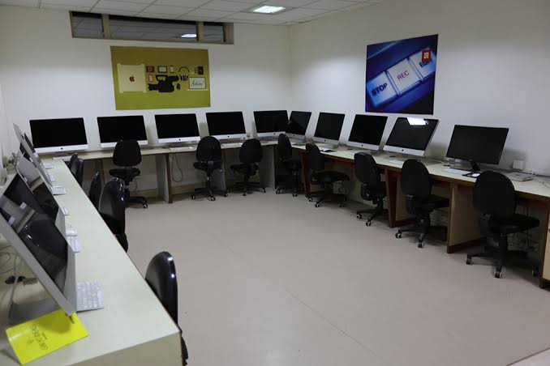
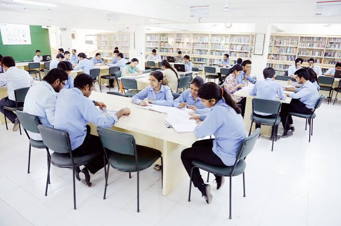
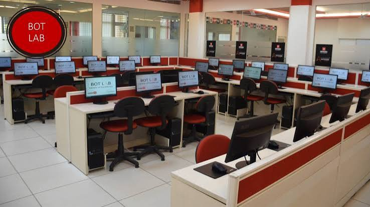

Chitkara University is a prominent private educational institution in North India, established by educators Dr. Ashok K. Chitkara and Dr. Madhu Chitkara. With campuses located in Punjab and Himachal Pradesh, the university has earned a strong reputation for its industry-aligned curriculum and hands-on learning approach. It offers a wide range of undergraduate, postgraduate, and doctoral programs across engineering, management, healthcare sciences, design, architecture, and computer applications. Known for its modern infrastructure, active research culture, and vibrant student life, Chitkara maintains robust ties with top global corporations, facilitating high placement rates and practical internship opportunities. In addition, its dedicated incubation centers, such as the Chitkara Innovation Incubator Foundation (CIIF), foster entrepreneurship, making the university a dynamic hub for innovation, skill development, and professional growth.



Chitkara WEBSITE Back to top